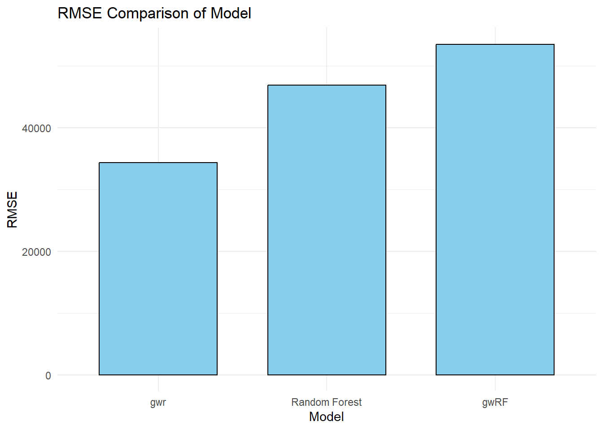
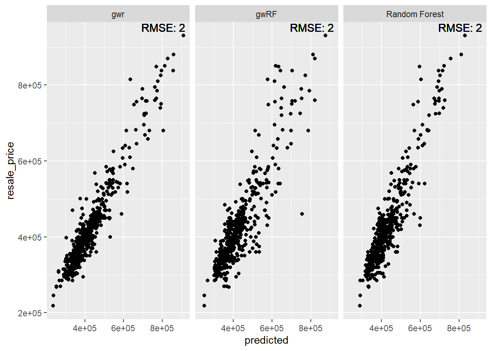
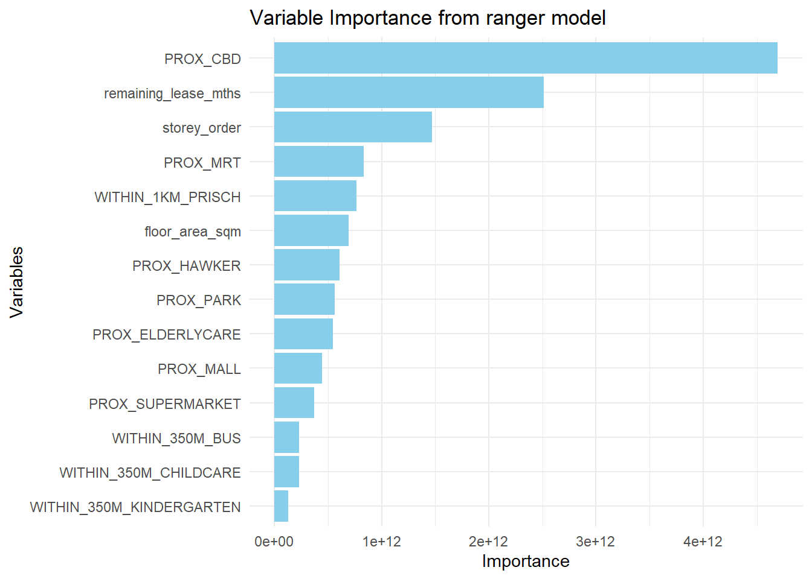

pacman::p_load(sf, spdep, GWmodel, SpatialML,
tmap, rsample, yardstick, tidyverse,knitr,kableExtra,spatialRF)In Class Exercise 12
Getting started
Installing package
Preparing data
mdata<-read_rds('data/mdata.rds')set.seed(1234)
HDB_sample <- mdata %>%
sample_n(1500)overlapping_points <- HDB_sample %>%
mutate(overlap=lengths(st_equals(., .))>1)
summary(overlapping_points$overlap) Mode FALSE TRUE
logical 1047 453 HDB_sample<-HDB_sample %>%
st_jitter(amount=5)Data Sampling
set.seed(1234)
resale_split <- initial_split(HDB_sample,
prop = 6.67/10,)
train_data <-training(resale_split)
test_data<-testing(resale_split)
write_rds(train_data,'data/train_data.rds')
write_rds(test_data,'data/test_data.rds')Multicollinearity Check
mdata_nogeo <- mdata %>%
st_drop_geometry()
ggstatsplot::ggcorrmat(mdata_nogeo[,2:17])
Predictive Modelling with gwr
gwr_bw_train_ad <- bw.gwr(resale_price ~ floor_area_sqm +
storey_order + remaining_lease_mths +
PROX_CBD + PROX_ELDERLYCARE + PROX_HAWKER +
PROX_MRT + PROX_PARK + PROX_MALL +
PROX_SUPERMARKET + WITHIN_350M_KINDERGARTEN +
WITHIN_350M_CHILDCARE + WITHIN_350M_BUS +
WITHIN_1KM_PRISCH,
data=train_data,
approach="CV",
kernel="gaussian",
adaptive=TRUE,
longlat=FALSE)Adaptive bandwidth: 625 CV score: 3.459032e+12
Adaptive bandwidth: 394 CV score: 3.231786e+12
Adaptive bandwidth: 250 CV score: 2.914736e+12
Adaptive bandwidth: 162 CV score: 2.610897e+12
Adaptive bandwidth: 107 CV score: 2.240188e+12
Adaptive bandwidth: 73 CV score: 1.971641e+12
Adaptive bandwidth: 52 CV score: 1.797271e+12
Adaptive bandwidth: 39 CV score: 1.659472e+12
Adaptive bandwidth: 31 CV score: 1.573963e+12
Adaptive bandwidth: 26 CV score: 1.550147e+12
Adaptive bandwidth: 23 CV score: 1.542544e+12
Adaptive bandwidth: 21 CV score: 1.518885e+12
Adaptive bandwidth: 19 CV score: 1.515965e+12
Adaptive bandwidth: 19 CV score: 1.515965e+12 gwr_ad <- gwr.basic(formula = resale_price ~ floor_area_sqm +
storey_order + remaining_lease_mths +
PROX_CBD + PROX_ELDERLYCARE + PROX_HAWKER +
PROX_MRT + PROX_PARK + PROX_MALL +
PROX_SUPERMARKET + WITHIN_350M_KINDERGARTEN +
WITHIN_350M_CHILDCARE + WITHIN_350M_BUS +
WITHIN_1KM_PRISCH,
data=train_data,
bw=20,
kernel="gaussian",
adaptive=TRUE,
longlat=FALSE)gwr_pred <- gwr.predict(formula = resale_price ~
floor_area_sqm + storey_order +
remaining_lease_mths + PROX_CBD +
PROX_ELDERLYCARE + PROX_HAWKER +
PROX_MRT + PROX_PARK + PROX_MALL +
PROX_SUPERMARKET + WITHIN_350M_KINDERGARTEN +
WITHIN_350M_CHILDCARE + WITHIN_350M_BUS +
WITHIN_1KM_PRISCH,
data=train_data,
predictdata = test_data,
bw=20,
kernel = 'gaussian',
adaptive=TRUE,
longlat = FALSE)gwr_pred_df <- as.data.frame(
gwr_pred$SDF$prediction) %>%
rename(gwr_pred = 'gwr_pred$SDF$prediction')Predictive Modelling with RF method
coords <- st_coordinates(HDB_sample)
coords_train <- st_coordinates(train_data)
coords_test <- st_coordinates(test_data)train_data_nogeom<-train_data %>%
st_drop_geometry()set.seed(1234)
rf <-ranger(resale_price ~ floor_area_sqm + storey_order +
remaining_lease_mths + PROX_CBD + PROX_ELDERLYCARE +
PROX_HAWKER + PROX_MRT + PROX_PARK + PROX_MALL +
PROX_SUPERMARKET + WITHIN_350M_KINDERGARTEN +
WITHIN_350M_CHILDCARE + WITHIN_350M_BUS +
WITHIN_1KM_PRISCH,
data=train_data_nogeom)test_data_nogeom <- cbind(
test_data, coords_test) %>%
st_drop_geometry()rf_pred <- predict(rf,
data = test_data_nogeom)rf_pred_df <- as.data.frame(rf_pred$predictions) %>%
rename(rf_pred = 'rf_pred$predictions')Predictive Modelling with SpatialML
set.seed(1234)
grf_ad<-grf(formula = resale_price ~
floor_area_sqm + storey_order +
remaining_lease_mths + PROX_CBD +
PROX_ELDERLYCARE + PROX_HAWKER +
PROX_MRT + PROX_PARK + PROX_MALL +
PROX_SUPERMARKET + WITHIN_350M_KINDERGARTEN +
WITHIN_350M_CHILDCARE + WITHIN_350M_BUS +
WITHIN_1KM_PRISCH,
dframe = train_data_nogeom,
bw=20,
kernel = 'adaptive',
coords = coords_train)
Number of Observations: 1000Number of Independent Variables: 14Kernel: Adaptive
Neightbours: 20
--------------- Global ML Model Summary ---------------Ranger result
Call:
ranger(resale_price ~ floor_area_sqm + storey_order + remaining_lease_mths + PROX_CBD + PROX_ELDERLYCARE + PROX_HAWKER + PROX_MRT + PROX_PARK + PROX_MALL + PROX_SUPERMARKET + WITHIN_350M_KINDERGARTEN + WITHIN_350M_CHILDCARE + WITHIN_350M_BUS + WITHIN_1KM_PRISCH, data = train_data_nogeom, num.trees = 500, mtry = 4, importance = "impurity", num.threads = NULL)
Type: Regression
Number of trees: 500
Sample size: 1000
Number of independent variables: 14
Mtry: 4
Target node size: 5
Variable importance mode: impurity
Splitrule: variance
OOB prediction error (MSE): 2056587170
R squared (OOB): 0.8568804
Importance: floor_area_sqm storey_order remaining_lease_mths
6.932661e+11 1.471090e+12 2.512971e+12
PROX_CBD PROX_ELDERLYCARE PROX_HAWKER
4.695331e+12 5.430899e+11 6.061641e+11
PROX_MRT PROX_PARK PROX_MALL
8.355142e+11 5.612980e+11 4.449032e+11
PROX_SUPERMARKET WITHIN_350M_KINDERGARTEN WITHIN_350M_CHILDCARE
3.698543e+11 1.287529e+11 2.290324e+11
WITHIN_350M_BUS WITHIN_1KM_PRISCH
2.310307e+11 7.644464e+11
Mean Square Error (Not OOB): 398120142.153R-squared (Not OOB) %: 97.227AIC (Not OOB): 19832.264AICc (Not OOB): 19832.752
--------------- Local Model Summary ---------------
Residuals OOB: Min. 1st Qu. Median Mean 3rd Qu. Max.
-290000.0 -23542.0 301.7 -1419.2 20628.4 275662.5
Residuals Predicted (Not OOB): Min. 1st Qu. Median Mean 3rd Qu. Max.
-39811.32 -2890.27 0.25 41.71 2914.50 45363.69
Local Variable Importance: Min Max Mean StD
floor_area_sqm 0 93554808148 6579446660 12070756152
storey_order 40825679 175066741478 6798143080 17439613620
remaining_lease_mths 147176404 132323223994 17003264291 27856556164
PROX_CBD 98672979 86998930774 7795275977 12420258631
PROX_ELDERLYCARE 136038143 60602086147 6363805690 9972185105
PROX_HAWKER 89375590 76470252974 5959960036 10069973920
PROX_MRT 141134469 116981909991 7311127365 14402287905
PROX_PARK 173527329 91563243055 6282954230 12004019497
PROX_MALL 136045951 111744007681 8082912771 14856365039
PROX_SUPERMARKET 117381309 67560243432 5118831575 8420630833
WITHIN_350M_KINDERGARTEN 0 43638703821 1704409355 3939462279
WITHIN_350M_CHILDCARE 24644933 114970847915 4291790153 10498357427
WITHIN_350M_BUS 45643896 81035956654 3244648284 6333435620
WITHIN_1KM_PRISCH 0 29773426249 1919719438 3594705849
Mean squared error (OOB): 2776322474.986R-squared (OOB) %: 80.66AIC (OOB): 21774.393AICc (OOB): 21774.881Mean squared error Predicted (Not OOB): 56975707.952R-squared Predicted (Not OOB) %: 99.603AIC Predicted (Not OOB): 17888.136AICc Predicted (Not OOB): 17888.623
Calculation time (in seconds): 24.725grf_pred<- predict.grf(grf_ad,
test_data_nogeom,
x.var.name = "X",
y.var.name = "Y",
local.w = 1,
global.w = 0)grf_pred_df <- as.data.frame(grf_pred)Model Comparison
test_data_pred <- test_data %>%
select(resale_price) %>%
cbind(gwr_pred_df) %>%
cbind(rf_pred_df) %>%
cbind(grf_pred_df)test_longer<-test_data_pred %>%
st_drop_geometry() %>%
pivot_longer(cols=ends_with('pred'),
names_to = 'model',
values_to = 'predicted')model_labels<- c(
gwr_pred = "gwr",
rf_pred = "Random Forest",
grf_pred = "gwRF"
)
test_longer<-test_longer %>%
mutate(model = recode(
model, !!!model_labels
))rmse_results<-test_longer %>%
group_by(model) %>%
rmse(truth=resale_price,
estimate=predicted) %>%
rename(rmse = .estimate) %>%
select(model,rmse)Model Comparison Plots
ggplot(rmse_results,
aes(x = reorder(model, rmse),
y = rmse,
fill = "skyblue")) +
geom_bar(stat = "identity",
fill = "skyblue",
color = "black",
width = 0.7) +
labs(title = "RMSE Comparison of Model",
y = "RMSE",
x = "Model") +
theme_minimal()
test_longer <- test_longer %>%
left_join(rmse_results,
by = "model")
ggplot(data = test_longer,
aes(x = predicted,
y = resale_price)) +
facet_wrap(~ model) +
geom_point() +
geom_text(data = test_longer,
aes(x = Inf, y = Inf,
label = paste("RMSE:", round(2))),
hjust = 1.1, vjust = 1.1,
color = "black", size = 4)Warning in geom_text(data = test_longer, aes(x = Inf, y = Inf, label = paste("RMSE:", : All aesthetics have length 1, but the data has 1500 rows.
ℹ Please consider using `annotate()` or provide this layer with data containing
a single row.
Variable Importance
var_imp <- data.frame(
Variable = names(grf_ad$Global.Model$variable.importance),
Importance = grf_ad$Global.Model$variable.importance
)ggplot(var_imp,aes(x=reorder(Variable,
Importance),
y=Importance))+
geom_bar(stat="identity",
fill="skyblue")+
coord_flip()+
labs(
title = 'Variable Importance from ranger model',
x = 'Variables',
y = 'Importance'
)+
theme_minimal()